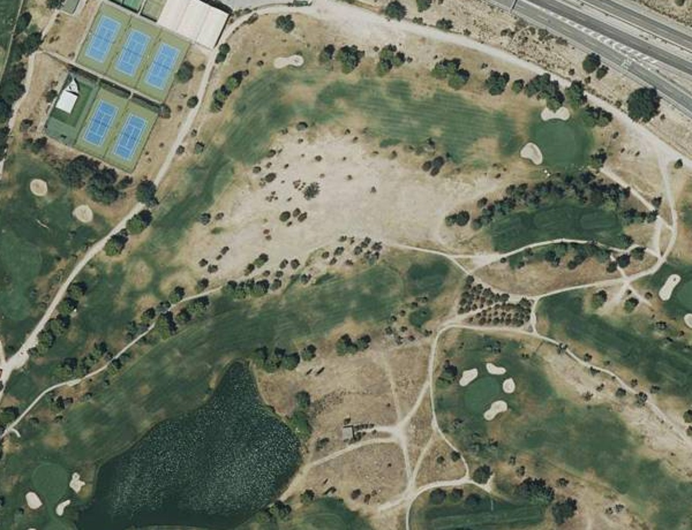

GUÍA OFICIAL
Imagen del hoyo
Cerrar ✕
Cargando lámina…
PRUEBA · HOYO 1
El terreno, en perspectiva
Cerrar ✕
2D · plano
3D · relieve
Relieve
×1 · real
×3 · acentuado
×6 · acentuado
Altitudes
Curvas cada 2 m

Cargando…
3D · relieve ×3
Sector del hoyo 1 · pistas de tenis al oeste
−
+
Recentrar
Más bajo
Más alto
N ↑ en 2D
Activa JavaScript para usar la tarjeta.
Guía oficial del recorrido
.